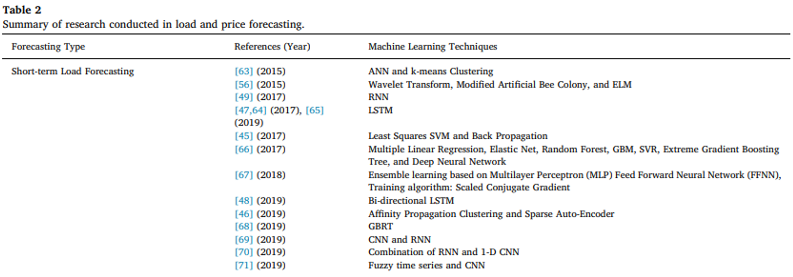
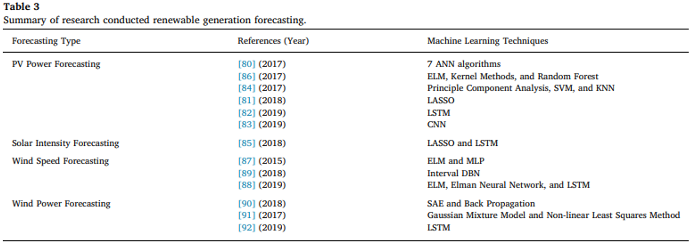
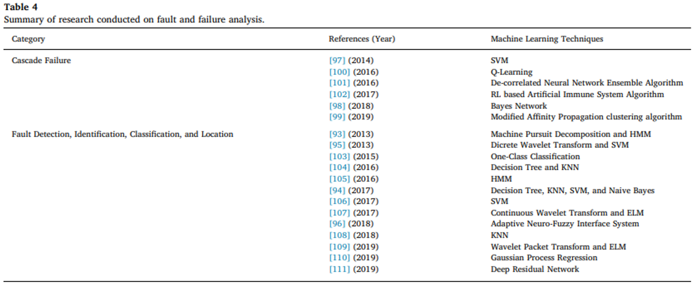
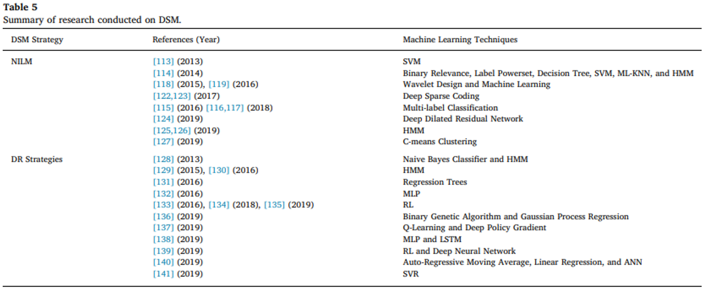
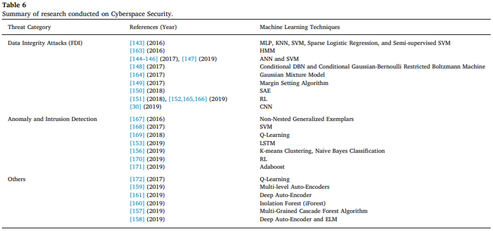
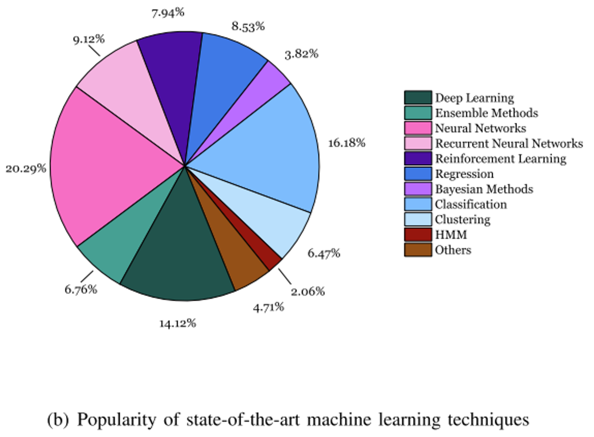
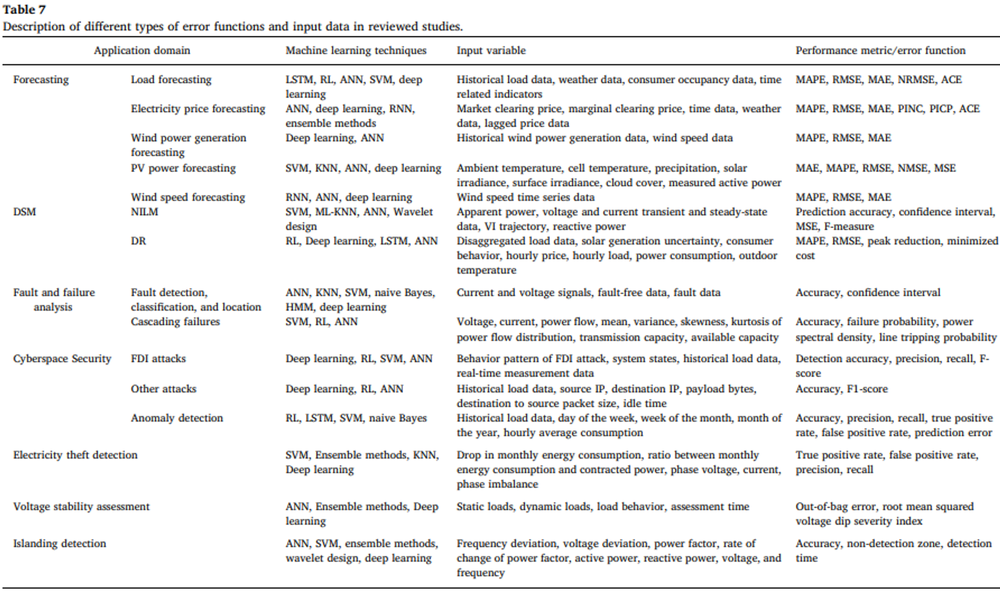
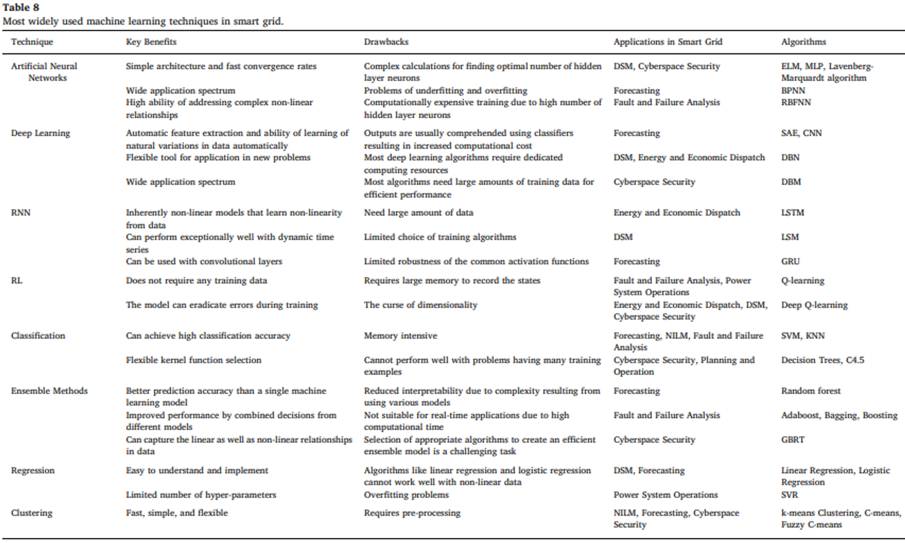

Machine learning driven smart electric power system: Current trends and new perspectives (2020)
Abstract
이 연구는 다양한 측면으로부터 스마트 그리드의 기술적 문제에 성공적으로 접근하기 위해 머신러닝 기술 사용의 증가하는 관심과 빠른 확장에 대해 쓰여졌다.
현재의 전력 시스템은 보다 능동적이고 유연하며 지능적인 스마트 그리드로 빠르게 전환되고 있으며 이는 많은 영역에서 도전을 야기한다. (다양하게 분배된 재사용가능한 에너지들의 통합, 사이버 보안, 수요측면관리, 시스템 계획 및 운영에 관한 의사결정)
스마트그리드에서 고급 기능의 실현은 기본적인 정보 통신 인프라와 다양한 소스(smart meter, phasor measurement units, and various forms of sensors)에서 생성된 방대한 양의 데이터를 효율적으로 처리하는 데 크게 의존한다.
몇몇 이슈는 여전히 열리고 더 연구할 가지가 있는 채로 남겨졌다. (high-performance data processing and analysis for intelligent decision-making in large-scale complex multi-energy systems, lightweight machine learning-based solutions, and so forth)
더하여 진보된 컴퓨팅, 통신기술(edge computing, ubiquitous internet of things and 5G wireless networks, in the smart grid are also highlighted.)을 활용하는 미래관점에서 스마트그리드는 주목받을 것이다.
머신러닝은 미래 스마트 전력 시스템을 이끄는 주요한 방법 중 하나가 될 것이다.
6. Conclusion
스마트 그리드 - 전통적 power grid와 반대로 더 효율적이고 데이터에 의존하고 사용자 중심적이다.
인공지능 맥락에서 머신러닝 기술은 스마트그리드의 다양한 측면의 단순하지 않은 기술적 도전에 접근하기 위한 효율적이고 진보된 도구로 고려된다.
머신러닝 툴 사용의 빠른 확장에도 불구하고 몇몇 문제들은 남아있고 더욱 연구할 가치가 있다.
200개가 넘는 2014~2019 high impact journal들을 광범위하게 리뷰하고 보고하였다. 간단한 신경망부터 세련된 강화학습과 딥러닝 방법도 관측되었다. 더 구체적으로 55개가 machine learning based forecasting 문제, 23개가 machine learning based fault analysis, 42개가 machine leanring driven DSM 문제, 35개가 cyberspace security issues였다.
1. Introduction
AC(Alternating current), DC(Direct current) system
conventional energy system → more efficient next-generation smart grid system.
conventional energy system
- few centralized and large power generation sources
- mainly hydropower or fossil fuel based power generation system to the consumers via a distribution system
- uni-directional(단방향) power and communication flow ⇒ passive
smart grid
- integration and contribution of every distributed and renewable energy resource
- two-way power and information flow ⇒ active —
- bi-directional flow of power and communication은 reliability, security, efficiency of power systems를 향상시킬 수 있다.
스마트 그리드는 더 좋은 energy efficiency, cost-effectiveness, controlled \(CO_2\) emission, reduced cost, improved utility로 인해 미래의 전력망으로 일컬어지고 있다.
스마트 그리드는 conventional power grid와 비교하여 넓은 범위의 작업들을 수행한다. 많은 수의 기기 연결은 에너지 관련 작업을 특정 방식으로 수행하기 위한 명령과 정보 교환을 가능케 한다.
grid infrastructure로의 IoT 기기들의 통합은 미래 스마트그리드로 향한 첫걸음이다.
- Smart meter는 실시간에서 에너지 소비를 측정할 수 있을 뿐만 아니라 양방향 통신을 통해 고객이 전력 유틸리티와 상호작용하고 advanced demand-side management operations를 수행할 수 있도록 한다.
- 스마트그리드에서 IoT의 통합은 스마트그리드들의 관리에 추가적인 challenge들을 가져온다. 예를들어 the timely delivery of critical operational information, the efficient process of the vat amount of field data, and cyberspace security issues. 이러한 문제들은 적절한 접근 및 기술 사용이 필요 e.g., the phasor measurement unit placement, advanced analytical tools, and machine learning-based solutions.
This paradigm-shift(conventional grid → smart grid) has equipped the power grid with many distributed generation(DG) systems, such as photovoltic(PV), wind energy, and electric vehicles(EV). 다시말해 스마트그리드는 processes, technologies, and distributed and renewable generation systems that makes the conventional power grid more intelligent and efficient의 통합이다.
다양한 DGs의 통합은 수많은 challenge들을 소개한다. 예를들어 load forecast, fault and failure analysis, demand-side management, non-intrusive load monitoring(NILM), cyberspace security, electricity theft detection, and islanding detection among others.
최근 몇년간 스마트 그리드에 독보적인 문제에 접근하는 머신러닝 기반 기술의 사용이 관측되는 트렌드이다.
이 연구는 스마트 그리드에서 머신러닝 기술의 응용의 최근 진보 overview와 다양한 기술들의 한계점에 대해 토론하는것에 더해 future practice을 위한 가능한 솔루션에 초점을 맞춘다.
2. An overview of machine learning
특히 IoT를 포함한 고급 정보 및 통신 기술을 전력 그리드 인프라에 통합하는 것은 스마트 그리드로 나아가는 주요 단계 중 하나이다.
스마트 그리드의 다양한 응용 분야에서 발생하는 challenge에 대처하기 위해 기계 학습 및 딥 러닝 기반 솔루션을 탐색하는 데 많은 연구 노력이 기울여졌다.
머신러닝 기술은 넓게 4가지 카테고리로 분류된다.
- Supervised learning : 학습을 위해 인풋과 아웃풋 사이에 맵핑이 되어있고 많은 트레이닝 샘플들 인풋과 아웃풋 페어에 라벨이 주어진다.
- Unsupervised learning : 라벨이 없을 뿐만 아니라 분류도 되어있지 않다. similarity 나 difference를 기준으로 그룹핑한다. supervised보다 복잡한 task. 흔한 방식은 cluster analysis이며 이는 숨겨진 패턴 또는 데이터를 그룹핑할때 EDA를 사용한다.
- Reinforcement learning(RL) : agent가 환경과 상호작용 하고 action에 응답하여 받은 자극에 기반하여 액션을 수정한다. RL은 input/output 페어의 라벨을 요구하지 않고 환경에서 액션에 응답하여 에이전트에 reward or penalty를 받는다는점에서 supervised learning과 다르다. RL는 행동을 자동적으로 결정하는것이 가능하다. 인간이나 동물의 행동과 가장 유사한 방법
- Ensemble methods : 몇몇 머신러닝 알고리즘을 사용하여 한개의 알고리즘을 쓸때보다 성능을 향상시키기 위해 만든다. 싱글보다 일반화된 성능을 가짐.
전통적인 계산 기술의 부족함과 한계는 다양한 스마트 그리드 도전 과제에 대한 대응으로 기계 학습 기술을 사용하는 동기를 제시한다.
Limitations of existing solutions
- Unable to handle large amounts of data
- Lacking robustness against uncertainty
- Lacking better optimization in the presence of constraints
- Lacking adaptive and autonomous operations
- Lacking intelligent decision making
- Lacking real-time processing
- Lacking complex systems modeling capability
- Unable to handle non-linear systems
Benefits of ML techniques
- Mostly data-driven
- Feature selection and feature extraction ability
- Autonomous, adaptive, and intelligent operations and decision making
- Can perform real-time and/or near realtime operations
- Can effectively deal with non-linear systems
- Complex system modeling
3. Machine learning applications in smart grid
3.1. Forecasting in smart grid
3.1.1. Electric load and price forecasting
Electric load forecasting is divided into three categories based on the forecasting horizons.
- Short-term Load Forecasting
short : generally involves load forecasting of a few minutes up to a few days
…

- General (Medium-term and long-term) Load Forecasting
medium : forecast of a few days up to a few months
long : forecast of a few months up to a year
…
- Electricity Price Forecast
…
3.1.2. Renewable power generation prediction
The integration of renewable energy systems poses many challenges due to their variable generation patterns caused by their geographical location, weather, and other factors which can impact the power quality and stability.
…

3.2. Machine learning in fault and failure analysis

3.3. Machine learning in demand-side management

3.4. Machine learning in cyberspace security

3.5. Others
- …
4. Discussion and remarks
4.1. Observations
- 광범위한 문헌 조사는 다양한 smart grid challenges에 접근하는 머신러닝, 딥러닝 기법의 사용 증가를 보여준다.

Based on the comprehensive review of the literature, a collection of observations and insights are summarized as follows:
Electric Load Forecasting : 상대적으로 성숙한 분야. 머신러닝 기법이 중요한 역할을 하였다. 기상 데이터의 활용 및 다양한 지역의 계층적 예측을 활용하였다. 게다가, 기계학습 기반 단기 예측은 수요를 충족시키고 간헐적이고 재생 가능한 분산 발전 예측에도 크게 기여하였다.
유명한 기계학습 기반 electric load forecast algorithms는 supervised neural networks, LSTM RNN, and Random forest among others를 포함한다
Fault diagnosis and detection : 머신러닝 기법은 고장 감지 및 진단에서 뛰어난 성과를 보인다. 이는 고장에 대한 깊은 이해나 전문 지식이 필요하지 않고, 데이터의 패턴에 민감하며, 필수적인 변수가 누락되어도 효율적으로 동작할 수 있다는 특성 때문이다. 반면에 베이지안 네트워크와 같은 지식 주도 방법(Knowledge-Driven Approach (↔︎ Data Driven Approach))은 도메인 및 전문 지식의 도입으로 불완전한 정보에 대한 문제를 해결할 수 있다.
Load management / demand-side management(DSM) : DSM frameworks or demand response programs are mainly based on classification where machine learning tools such as SVM, MLP, and RNN have shown promising performance.
NILM : use of deep learning and advanced multi-label classification methods such as ML-KNN and SVM where the need of prior feature extraction is diminished due to the automatic feature extraction ability of such methods, which was one of the challanges for the classic machine learning techniques.
Cyber-attack detection : 머신러닝 기반 방법은 flexibility towards scalability 때문에 높은 분류 정확도를 보인다. + dominance of supervised learning methods in attack detection.
Energy and economic dispatch : 대부분의 문헌들은 multi-agent theory를 사용. 이는 정확한 cost function의 수학적 모델을 요구하는 반면 최근의 몇 연구에서는 이 문제를 해결하기 위해 강화학습 알고리즘과 같은 머신러닝을 사용하는 경향이 있다.
기존의 그리드에서 스마트 그리드로 전환하고 기존의 생산 시스템을 탈탄소화 하기 위해서는 현재의 전력망에 친환경적이고 재사용가능한 생산시스템의 더 많이 침투해야한다. 이러한 시스템의 침투는 최적의 전력 흐름과 수급 균형을 유지하면서 효과적이고 효율적인 계획 전략이 필요하며 이는 SVM, Q-learning, Decision trees 같은 기계 학습 도구가 효과적으로 사용될 수 있는 복잡한 비선형 문제로 모델링될 수 있다.

다양한 머신러닝 알고리즘(SVM, LSTM, DBN and CNN)이 많은 스마트 그리드 문제 해결에 사용되곤 한다.
Neural network가 가장 많이 사용되고 높은 정확도를 보이며 non-linear mapping ability.
Deep learning 은 forecasting과 cyberspace security에서 인기있는 기술이다.
LSTM과 같은 RNN은 forecasting문제에서 사용이 증가하고있다.

4.2. Technical challenges
다양한 스마트 그리드 응용 분야에서 기계 학습 알고리즘 및 기술의 구현을 위한 몇 가지 도전요소와 권장 사항:
- Smart Grid Data Preprocessing:
데이터 전처리는 일반적으로 데이터 통합, 데이터 정제, 데이터 변환 세 가지 주요 단계로 이루어짐.
스마트 그리드의 데이터 전처리 사이클은 다양한 데이터 소스로 인해 도전적이다.
주요 데이터 소스에는
real and reactive powers, DR capacity, voltage 등의 operational data
전력 품질 및 신뢰성과 관련된 non-operational data
하루 중 시간, 평균, 최대 수요 값, 전력 사용과 관련된 스마트 미터 데이터
voltage loss, fault detection event, security breach event를 포함하는 스마트 그리드 event data
다른 유형의 데이터를 조직하고 해석하는 데 사용되는 메타데이터
스마트 그리드의 데이터 전처리는 다양한 유형의 데이터 소스와 이에 따른 데이터로 인해 도전적이다.
- Data Availability:
- load forecasting 문제에서의 기계 학습 기반 모델은 효율적인 예측 결과를 보이며 이러한 모델은 전통적인 방법보다 더 유연하다. 그러나 기계학습 기반의 예측 모델은 대량의 대표적인(representative) 데이터에 크게 의존하며, 이러한 데이터 없이는 모델이 일반성을 가지지 못한다. 또한 예측 시계열에 대한 예측 기간에 상관없이 정확한 예측을 수행하고 다양한 제약 조건에 대한 트레이드오프를 하지 않고도 작동할 수 있는 표준적이고 견고한(robust) 예측 방법이 필요하다.
- Load Transfer Detection(부하 이전 감지?):
- 대부분의 문헌 검토에서는 강조되지 않았음. 다만 정확하고 효율적인 예측을 달성하기 위한 주요 도전 중 하나이다.
- 이 도전은 utility or distribution 운영자가 주로 유지보수 또는 신뢰성 이유로 계절적, 임시 또는 영구적인 기준으로 다른 회로로 부하를 이전할 때 발생한다. 기계 학습 방법은 부하 예측에서 이러한 도전을 효과적으로 식별하고 해결하는 데 중요한 역할을 할 수 있다.
- Extrapolation of Faults:
- fault diagnosis와 fault detection을 위한 데이터 기반 모델은 유망한 결과를 보여주었지만 이러한 기계학습 모델은 훈련 데이터의 경계를 넘어 추론할 수 없다. 따라서 베이지안 방법, 퍼지 기반 방법과 같은 지식 기반 방법과 데이터 기반 기계학습 기반 방법을 결합한 하이브리드 접근 방식은 상기한 문제를 효과적으로 해결할 수 있다.
- Machine Learning-based Planning Framework:
- 스마트 그리드 기획 및 운영 문제에 대한 기계학습을 통한 추가적인 연구 가능성이 여전히 많이 남아있다.
- Deep Learning-based Multi-label Classification Approaches:
NILM 문제에서 표준 딥 러닝 방법(SAE 및 DBN과 같은)의 한계로 인해 딥 러닝 기반 다중 레이블 분류의 탐색과 개발이 필요하다.
로지스틱 회귀 및 소프트맥스가 훈련에 자주 사용되는 경우, 로지스틱 회귀 및 소프트맥스 기반의 딥 러닝 모델 훈련은 단일 클래스로 이어진다. 따라서 다른 혁신적인 딥 러닝 기반 다중 레이블 분류 접근 방식은 NILM 문제를 효과적으로 해결할 수 있다.
=> 다중 레이블 분류와 다중 클래스 분류(다중분류)는 다르다. 다중분류는 각 샘플이 하나의 클래스에만 속할 수 있는 분류 문제를 의미. 다중 레이블 분류는 각 샘플이 여러 개의 클래스에 속할 수 있는 분류 문제를 의미한다. 즉, 각 샘플은 여러 개의 레이블을 가질 수 있으며 각 레이블은 클래스를 나타낸다.
- Post-Attack Resilience Frameworks(사이버 공간에서의 공격 후 회복 프레임 워크):
- 사이버 공간 보안과 관련된 대부분의 문헌은 기계학습 기반의 공격 탐지 및 예방 메커니즘에 중점을 두지만, 공격 이후의 상황에 중점을 둔 출판물은 소수이다. 따라서 사이버 위협의 탐지 및 예방뿐만 아니라 완화에 중점을 둔 보안 알고리즘이 필요하다.
- Lightweight Machine Learning Solutions:
- 미래의 IoT 기반 스마트 디바이스에 구현하기 위해 빠르면서도 계산 비용이 적은 기계 학습 및 딥 러닝 알고리즘이 필요하다. 이는 계산 요구 사항이 제한된 스마트 디바이스에서 사용될 것이다.
- Smart Grid Reliability Requirements:
스마트 그리드에 대규모로 통합되는 재생 가능한 power sources, 특히 풍력 및 태양광 발전 시스템은
일반적인 예측 기간에서의 큰 예측 오류,
대규모 설치로 인한 송전 혼잡,
전압 및 주파수 안정성과 관련된 전력 품질 문제,
지리적으로 분산된 자원으로 인한 관련 전력 분배 시스템의 challenge
로 스마트 그리드의 신뢰성 요구 사항을 강조한다. 이러한 시스템의 불확실성 및 신뢰성 요구 사항은 스마트 그리드에서 기계 학습 기반 기술을 다양한 측면에서 활용하는 데 명백한 challenge를 제공한다. 예를 들면 효율적인 운영 상태 모니터링 및 분석, 정확한 상태 예측 및 이상 징후 감지, 그리고 합리적인 의사 결정 등이 있다.
5. New perspectives
- 컴퓨터 분야에서의 기술적 발전과 고급 컴퓨팅 시스템의 가용성은 복잡하고 계산 비용이 많이 드는 알고리즘을 활용하여 다양한 과학 및 공학적 도전에 효과적인 해결책을 제공하고 있다.
5.1. New perspectives in smart energy systems application domain
스마트 그리드는 다양한 성격의 에너지 원천과 소비자들 간의 복잡한 네트워크로, 여기에서 기계 학습 기술이 유망한 기여를 보여주고 있다.
기계 학습 모델의 적용은 에너지 시스템에서 운영 계획, 소비자 수요 관리, 재생 에너지 시스템 통합 등에 유용
단위 할당 및 에너지 경제 배치와 같은 전력 시장 거래 운영이 기계 학습 도구를 사용하여 더 깊이 탐구될 수 있다
DSM은 스마트 그리드의 핵심 촉진 요소 중 하나로, 소비자들이 유틸리티 자체 외에도 전력 관리에 적극적으로 참여할 수 있는 환경을 제공
DR에 대한 기존 연구가 이미 수행되었음에도 불구하고, 기계 학습이 소비자 행동 예측을 통해 전력 공급 관리를 더욱 향상시킬 수 있다는 전망
소비자 행동 및 전력 소비 패턴을 학습함으로써 부하 예측, 전기 요금 개발, 그리고 차량-그리드 및 차량-가정 모델, 전기 자동차 충전 일정에 큰 기여를 할 수 있습니다
5.2. New perspectives in emerging technologies integration with smart energy systems
인공 지능 및 컴퓨팅 기술의 발전에도 불구하고, 스마트 디바이스의 급증, 복잡한 기계 학습 및 딥 러닝 알고리즘의 진화, 그리고 이에 따른 컴퓨팅 수요의 증가로 인해 필요한 컴퓨팅 리소스의 즉각적인 가용성이 요구된다.
기존의 스마트 그리드 네트워크는 주로 IoT 및 클라우드 기반 네트워크로, 데이터 처리 및 저장은 일반적으로 클라우드 서버에서 수행된다. 그러나 클라우드 컴퓨팅 기반 시스템은 효율적인 컴퓨팅 및 저장 리소스를 제공하며 복잡한 계산 부담을 완화하는 데 도움이 될 수 있지만, 클라우드 컴퓨팅은 고지연성과 실시간 응용 프로그램에 제약 사항이 있으며 대역폭 이용도가 증가하는 등의 한계가 있다. 더구나, 클라우드 컴퓨팅 패러다임은 이동성을 지원하지 않는 문제도 가지고 있다.
앞서 언급한 문제를 해결하기 위해 에지 컴퓨팅을 스마트 그리드 네트워크에 클라우드 컴퓨팅과 함께 중간 컴퓨팅 및 저장 시스템으로 통합할 수 있다. 에지 컴퓨팅 기술은 주로 포그 컴퓨팅, 모바일 에지 컴퓨팅 및 클라우드렛 컴퓨팅을 포함.
미래의 연구 전망에는 IoT 및 에지 컴퓨팅 기반 스마트 그리드 인프라에 정교한 기계 학습 도구를 도입하여 예측 분석, 데이터 필터링, 사이버 공격 탐지, 단기 예측, 에지에서의 부하 분해 등과 같은 다양한 기능을 수행하는 것이 포함될 수 있다. 클라우드에서 풍부한 양의 기록 데이터를 기반으로 훈련된 기계 학습 모델은 에지 디바이스에서의 실시간 추론을 통해 실현될 수 있다.
에지 컴퓨팅 패러다임 외에도 통신 네트워크의 최근 발전 및 5G 네트워크의 진화는 DSM, 그리드 모니터링, 그리드 제어 및 전기차 충전 및 방전 조정과 같은 다양한 스마트 그리드 서비스에 대한 네트워크 가상화 및 소프트웨어 정의 네트워크와 같은 혁신적인 5G 개념의 사용을 촉진하고 있다. 5G를 활용한 IoT의 스마트 그리드 적용은 높은 통신 속도, 동적인 특성, 저전력 소비, 견고한 보안 및 다양한 연결 기능으로 인해 더 나은 통신 인프라를 제공할 수 있다.
기계 학습 기술은 이러한 기술들이 제공하는 탁월한 예측 능력에 따라 5G를 지원하는 스마트 그리드 시스템에서 라디오 자원 할당의 최적화에 기여할 수 있다.
논문 정리 중 생략한 내용
에지 컴퓨팅
- 포그 컴퓨팅
- 모바일 에지 컴퓨팅
- 클라우드렛 컴퓨팅